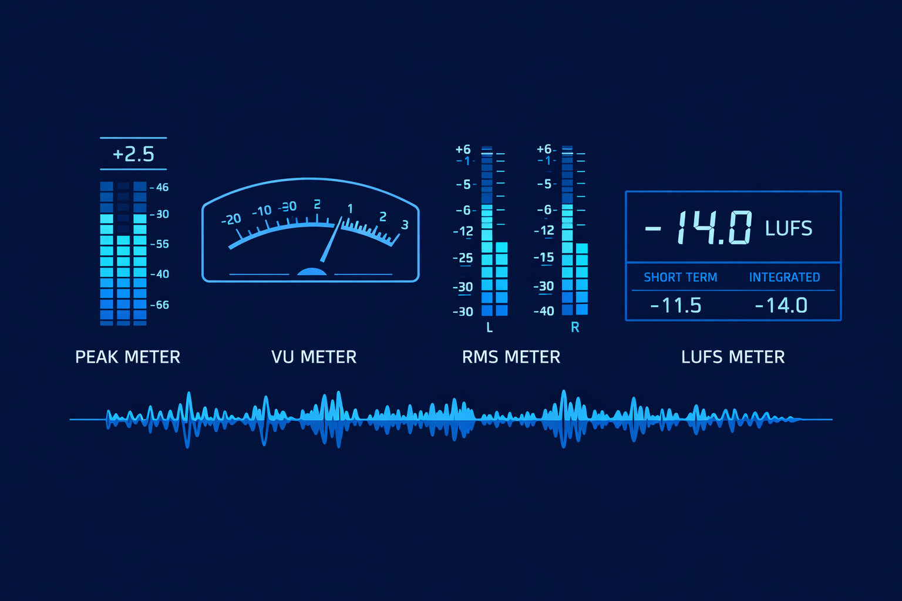

Mastering Audio Metering in Music Production
Published on July 31, 2025
Ever uploaded a track to Spotify, only to find it sounds quieter—or just flatter—than you remember in the studio? The missing link might not be your ears—it might be your meters. Learn how to use metering effectively at every stage of production.